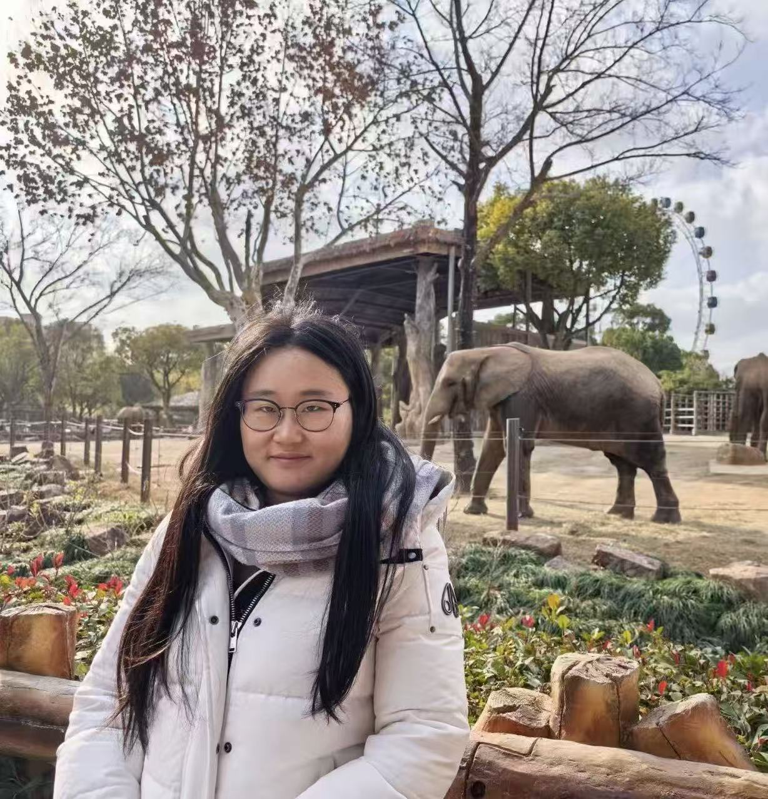
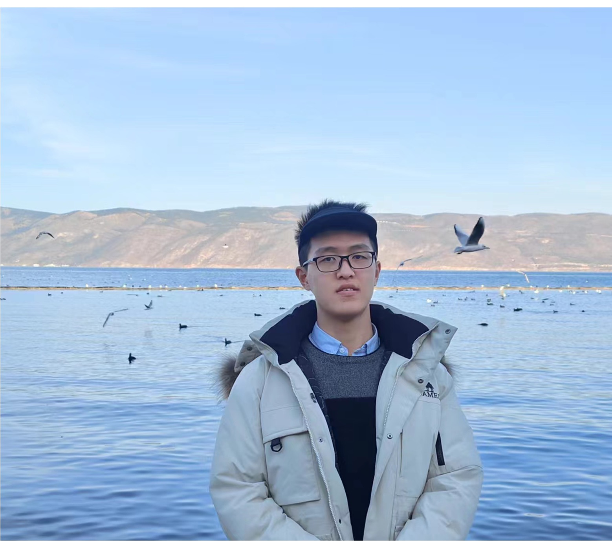
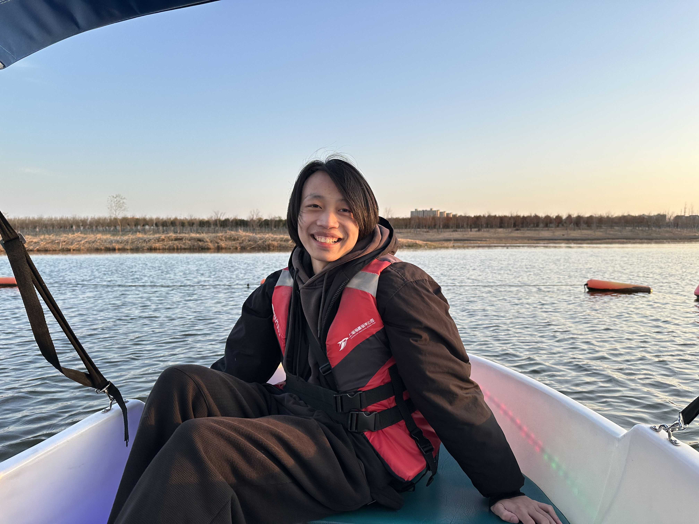

Team
Lab Members

Dr. Guanlin Wang
Principal Investigator, March 2022 –
Ph.D. with Prof. John Speakman, Chinese Academy of Sciences
Postdoc with Prof. Adam Mead, MRC WIMM, University of Oxford
Junior Research Fellow, Wolfson College, University of Oxford
Research direction: metabolism, single-cell omics, spatial transcriptomics, artificial intelligence, and computational biology.
Email: guanlin_wang@fudan.edu.cn
Office: D1313, Wangu Building, Fudan University
PhD Students
Pengwei Dong
PhD Student
2022 –
Research: single-cell/spatial omics, white adipose tissue atlas
Yifan Liang
PhD Student
2022 –
Research: single-cell omics,physical activity,computational biology

Chenxiao Yu
PhD Student
2023 –
Research: pan-cancer single-cell/spatial omics, genetics
MD Student

Hongcheng Chen
MD
2024 –
Research: translational medicine, aging clock, clinical omics
Master Students

Jianing Xu
Master Student
2024 –
Research: pan fibrosis, omics data analysis
Shiqi Ao
Master Student
2025 –
Research: metabolic diseases, omics data analysis, AI
Undergraduate Student

Junhao Cheng
Undergraduate
2025 –
Research: spatial transcriptomics, cell cell interactions, computational biology